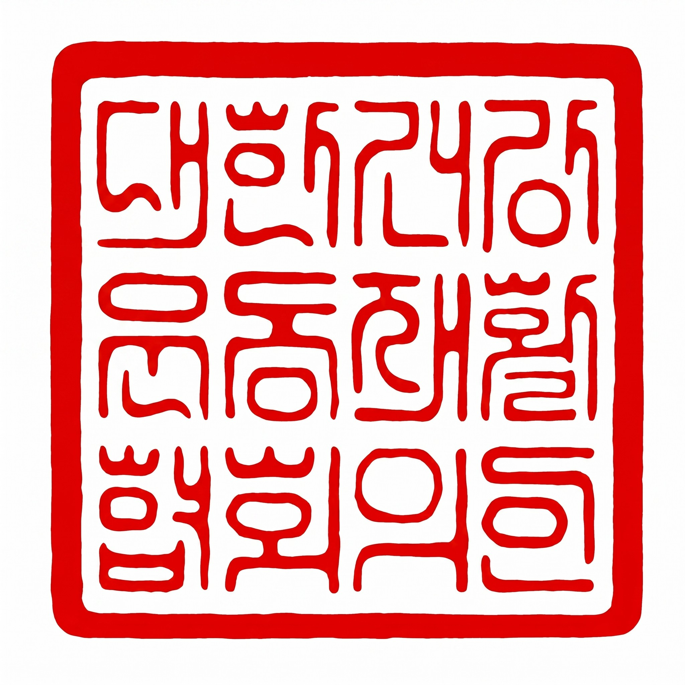

정관 제29조 및 제30조에 따라 정관과 주요 운영규정 전문을 홈페이지에 게시하여 투명하게 공개합니다. 임원 명부는 협회소개 > 조직도에서 확인하실 수 있습니다.
대한건강운동재활협회 정관
제1장 총칙
제1조 (명칭)
① 이 단체는 "대한건강운동재활협회"(이하 "본회"라 한다)라 한다.
② 본회의 영문 표기는 Korea Association of Health & Exercise Rehabilitation (약칭 K.A.H.E.R)로 한다.
제2조 (사무소)
① 본회의 주된 사무소는 경기도에 둔다.
② 필요에 따라 이사회 의결로 지부를 설치할 수 있다.
제3조 (목적)
본회는 건강운동 및 재활 분야의 전문 인재 양성, 교육과정 개발, 자격인증 운영을 통해 회원의 전문성 향상과 국민 건강증진에 이바지함을 목적으로 한다.
제4조 (사업)
본회는 제3조의 목적을 달성하기 위하여 다음 각 호의 사업을 수행한다.
1. 건강운동·재활 관련 교육과정 및 자격인증 프로그램 개발·운영
2. 협회 공인 자격증(교육강사부장 포함) 발급 및 관리
3. 학술세미나, 워크숍, 연수교육 등 교육행사 개최
4. 건강운동·재활 관련 정보 수집·연구 및 홍보
5. 유관 기관·단체와의 교류 및 협력
6. 기타 본회 목적 달성에 필요한 사업
제2장 회원
제5조 (회원 자격)
① 본회의 회원은 정회원, 준회원으로 구분한다.
② 정회원: 건강운동·재활 관련 분야에 종사하거나 관심 있는 자로서 본회 가입 신청서를 제출하고 이사회의 승인을 받은 자.
③ 준회원: 본회 교육과정에 참여 중인 자 또는 이사회가 인정하는 자.
제6조 (가입 절차)
① 회원으로 가입하고자 하는 자는 소정의 가입신청서를 작성하여 본회에 제출하여야 한다.
② 이사회는 가입신청서를 검토하여 가입 여부를 결정하고, 해당 신청자에게 통보한다.
제7조 (회원의 권리)
① 정회원은 총회에서 의결권 및 선거권·피선거권을 가진다.
② 정회원은 본회의 시설 이용 및 사업에 참여할 권리를 가진다.
제8조 (회원의 의무)
① 회원은 본회 정관 및 제 규정을 준수할 의무가 있다.
② 회원은 총회에서 의결한 회비를 납부할 의무가 있다.
제9조 (탈퇴 및 제명)
① 회원은 자유롭게 탈퇴할 수 있다.
② 본회의 명예를 훼손하거나 목적에 반하는 행위를 한 회원은 이사회 의결로 제명할 수 있다.
③ 제명된 회원에게는 서면으로 통보하여야 한다.
제3장 임원
제10조 (임원의 종류와 정수)
본회에는 다음 각 호의 임원을 둔다.
1. 회장 1인
2. 이사 5인 이상 10인 이내 (교육/재무·학술·홍보·기획·행정이사 등)
3. 감사 1인 이상 2인 이내
4. 자문위원 약간 명 (홍보·학술·운영자문위원 등, 의결권 없음)
제11조 (임원의 선임)
① 회장은 총회에서 정회원 중에서 선출한다.
② 이사는 회장의 추천에 의하여 총회에서 인준한다.
③ 감사는 총회에서 선출한다.
④ 자문위원은 이사회 의결로 위촉한다.
제12조 (임원의 결격사유)
다음 각 호에 해당하는 자는 임원이 될 수 없다.
1. 미성년자
2. 금고 이상의 형을 선고받고 집행이 종료되지 아니한 자
3. 법원의 판결에 의하여 자격이 정지 또는 상실된 자
제13조 (임원의 임기)
① 임원의 임기는 2년으로 하며, 연임할 수 있다.
② 임기 중 임원의 결원이 생긴 경우 이사회에서 보선하고 총회의 추인을 받으며, 보선된 임원의 임기는
전임자의 잔여기간으로 한다.
제14조 (임원의 직무)
① 회장은 본회를 대표하고 업무를 통할하며, 총회 및 이사회의 의장이 된다.
② 이사는 이사회를 구성하고 이사회에서 의결한 사항을 집행한다.
③ 감사는 본회의 재정 및 업무를 감사하고, 그 결과를 총회에 보고한다.
④ 자문위원은 이사회의 요청에 따라 해당 분야에 관하여 자문한다.
제15조 (임원의 해임)
① 임원이 본회의 목적에 반하는 행위를 하거나 직무를 태만히 한 경우 이사회 의결로 해임할 수 있다.
② 해임된 임원에게는 서면으로 통보하여야 한다.
제4장 교육강사부장
제16조 (교육강사부장의 설치)
① 본회는 교육사업의 전문적 운영을 위하여 교육강사부장을 둔다.
② 교육강사부장은 별도의 "교육강사부장 운영규정"에서 정하는 자격 요건을 갖춘 자 중에서 회장이 이사회의
동의를 거쳐 임명한다.
③ 교육강사부장은 협회 공인 교육강사 자격 보유자로 구성되며, 협회 명의의 교육과정 강의 및 실습 지도 활동을
수행할 수 있다.
제17조 (교육강사부장의 임기 및 해임)
① 교육강사부장의 임기는 2년으로 하며, 재임명이 가능하다.
② 교육강사부장의 직무·권한·의무 및 해임에 관한 세부 사항은 "교육강사부장 운영규정"에서 정한다.
제5장 총회
제18조 (총회의 구성)
총회는 정회원으로 구성한다.
제19조 (총회의 소집)
① 정기총회는 매년 1회 회장이 소집한다.
② 임시총회는 회장 또는 재적 정회원 3분의 1 이상의 요청이 있을 때 소집한다.
③ 총회 소집은 회의 7일 전까지 회의 일시·장소·안건을 문서(전자문서 포함)로 통지하여야 한다.
제20조 (총회의 의결 사항)
총회는 다음 각 호의 사항을 의결한다.
1. 정관의 변경
2. 회장·감사의 선출
3. 이사의 인준
4. 예산 및 결산의 승인
5. 본회의 해산
6. 기타 이사회가 총회에 부의하는 사항
제21조 (총회의 의결 정족수)
① 총회는 재적 정회원 과반수의 출석으로 개의한다.
② 총회의 의결은 출석 정회원 과반수의 찬성으로 한다.
③ 정관 변경 및 해산은 재적 정회원 3분의 2 이상의 찬성으로 의결한다.
④ 부득이한 사유로 출석이 어려운 경우 서면 위임장으로 의결권을 행사할 수 있다.
제22조 (총회 의사록)
총회의 의사록에는 의결 사항, 참석자, 표결 결과를 기재하고 의장 및 출석 임원이 서명·날인하여야 한다.
제6장 이사회
제23조 (이사회의 구성 및 소집)
① 이사회는 회장과 이사로 구성한다.
② 이사회는 회장이 소집하며, 재적 이사 과반수의 요구가 있을 때에도 소집하여야 한다.
③ 이사회 소집은 회의 7일 전까지 회의 일시·장소·안건을 통지하여야 한다. 다만, 긴급한 사유가 있을 때에는
그러하지 아니한다.
제24조 (이사회의 의결 사항)
이사회는 다음 각 호의 사항을 의결한다.
1. 본회 운영에 관한 중요 사항
2. 정관 변경안 심의 및 총회 부의
3. 예산·결산안 작성 및 총회 제출
4. 자격인증 프로그램 및 사업계획 승인
5. 교육강사부장의 임명 동의
6. 자문위원 위촉
7. 회원 제명
8. 운영규정 제·개정
9. 기타 본회 운영에 필요한 사항
제25조 (이사회의 의결 정족수)
① 이사회는 재적 이사 과반수의 출석으로 개의한다.
② 의결은 출석 이사 과반수의 찬성으로 한다.
③ 이사회 의사록에는 의결 사항과 참석자를 기재하고 의장 및 출석 이사가 서명·날인하여야 한다.
제7장 재정
제26조 (재산의 구분)
① 본회의 재산은 기본재산과 운용재산으로 구분한다.
② 기본재산은 본회 설립 시 출연한 재산과 이사회의 의결로 기본재산으로 편입한 재산으로 한다.
③ 기본재산의 처분은 이사회 의결 및 총회 승인을 거쳐야 한다.
제27조 (재정의 운영)
① 본회의 운영 경비는 회비, 자격인증 수수료, 교육비, 후원금, 기타 수입으로 충당한다.
② 본회의 회계연도는 매년 1월 1일부터 12월 31일까지로 한다.
③ 본회의 수입은 목적사업에만 사용하며, 구성원 누구에게도 분배하지 아니한다.
제28조 (예산 및 결산)
① 매 회계연도의 예산은 이사회에서 작성하여 총회의 승인을 받아야 한다.
② 결산은 감사의 감사를 거쳐 총회에 보고하고 승인을 받아야 한다.
제8장 보칙
제29조 (운영규정)
① 본회는 정관의 시행에 필요한 세부 사항을 운영규정으로 정할 수 있다.
② 운영규정의 제·개정은 이사회 의결로 한다.
③ 본회는 교육강사부장 운영규정을 포함한 주요 운영규정을 홈페이지에 공시함으로써 회원 및 대외적 신뢰를
유지하여야 한다.
제30조 (홈페이지 공시)
본회는 정관, 주요 운영규정, 임원 명부, 연간 사업계획·결산 요약 등을 홈페이지에 게시하여 투명하게 운영한다.
제31조 (정관 변경)
① 이 정관을 변경하려면 이사회에서 변경안을 심의하고 총회에서 재적 정회원 3분의 2 이상의 찬성으로
의결하여야 한다.
② 정관 변경 후에는 변경된 정관을 관할 세무서에 신고하여야 한다.
제32조 (해산)
① 본회를 해산하려면 총회에서 재적 정회원 3분의 2 이상의 찬성으로 의결하여야 한다.
② 본회 해산 시 잔여 재산은 이사회 의결로 유사 목적 단체에 귀속시킨다.
제33조 (준용)
이 정관에서 정하지 않은 사항은 일반적인 사회통념 및 관련 법령을 준용한다.
부칙
제1조 (시행일) 이 정관은 총회의 의결을 거친 2026년 6월 1일부터 효력이 발생한다.
제2조 (경과조치) 이 정관 시행 당시 기존 임원은 이 정관에 의하여 임명된 것으로 본다.
제3조 (임원 및 회원) 본회 설립 당초의 임원 및 회원은 별지 1과 같다.
(임원 명부는 협회소개 > 조직도에 공시)
제4조 (인장) 본회가 사용할 인장은 이사회 의결로 정한다.
2026년 6월 1일
대한건강운동재활협회 회장 장한별

교육강사부장 운영규정
제1조 (목적)
이 규정은 대한건강운동재활협회(이하 "본회"라 한다) 정관 제16조 및 제17조에 따라 교육강사부장의 임명, 자격 요건, 직무, 권한, 의무 및 해임에 관한 세부 사항을 정함으로써 본회 교육사업의 전문성과 신뢰성을 높이는 데 목적이 있다.
제2조 (정의)
이 규정에서 사용하는 용어의 정의는 다음과 같다.
1. "교육강사부장"이란 본회가 인정하는 교육강사 자격을 보유하고, 회장이 이사회의 동의를 거쳐 임명한 자로서
본회의 교육과정 운영 및 강사 활동을 수행하는 자를 말한다.
2. "협회 공인 교육강사 자격"이란 본회가 정한 기준을 충족하여 회장이 공인한 강사 자격을 말한다.
제3조 (자격 요건)
교육강사부장으로 임명되기 위해서는 다음 각 호의 요건을 모두 갖추어야 한다.
1. 본회 정회원 자격을 보유한 자
2. 본회가 운영하는 교육과정을 이수하고 소정의 평가를 통과한 자
3. 회장이 정하는 강사 인증 심사에서 적격 판정을 받은 자
4. 본회의 윤리강령 및 강사 행동규범을 준수할 것을 서약한 자
제4조 (임명)
① 교육강사부장은 제3조의 자격 요건을 갖춘 자 중에서 회장이 이사회의 동의를 거쳐 임명한다.
② 교육강사부장으로 임명된 자에게는 회장 명의의 임명장 및 협회 공인 교육강사 자격증을 교부한다.
③ 교육강사부장의 임기는 2년으로 하되, 재임명이 가능하다.
제5조 (직무)
교육강사부장은 다음 각 호의 직무를 수행한다.
1. 본회가 인정하는 자격과정 및 교육프로그램의 강의 및 실습 지도
2. 수강생 평가 및 수료 여부 판정 보조
3. 교육 콘텐츠 개발 및 개선 의견 제출
4. 본회 주관 학술·실습 행사 운영 지원
5. 본회의 홍보 활동 참여
제6조 (권한)
① 교육강사부장은 본회가 승인한 교육과정에 한하여 본회 명의로 강의 활동을 할 수 있다.
② 교육강사부장은 본회 교육위원회 회의에 참석하여 의견을 개진할 수 있다.
③ 교육강사부장이 본회 명의로 홍보 자료를 제작·배포할 경우에는 사전에 회장의 승인을 받아야 한다.
제7조 (의무)
교육강사부장은 다음 각 호의 의무를 진다.
1. 본회의 교육 목표 및 지도 방침 준수
2. 강의 현장에서의 윤리적 행동 유지
3. 수강생 개인정보 보호
4. 본회의 승인 없이 본회 자격증 명칭을 사적으로 도용하거나 변용하지 않을 것
5. 연간 1회 이상 본회가 지정하는 보수교육 이수
제8조 (해임 및 자격 취소)
① 교육강사부장이 다음 각 호의 사유에 해당할 경우 회장은 이사회의 의결을 거쳐 임명을 취소할 수 있다.
1. 제3조의 자격 요건을 상실한 경우
2. 본회의 명예를 훼손하는 행위를 한 경우
3. 제7조의 의무를 중대하게 위반한 경우
4. 본인이 해임을 요청한 경우
② 임명이 취소된 자는 본회 명의의 강사 자격을 즉시 반납하고, 본회 명의로 진행 중인 강의 활동을 중단하여야 한다.
제9조 (공시)
본회는 이 규정을 홈페이지에 게시하여 회원 및 대외적으로 교육강사부장 제도의 기준과 운영 방침을 투명하게 공개한다.
제10조 (보칙)
이 규정에서 정하지 않은 사항은 본회 정관 및 이사회 의결에 따른다.
부칙
제1조 (시행일) 이 규정은 2026년 6월 1일부터 시행한다.
2026년 6월 1일
대한건강운동재활협회 회장 장한별